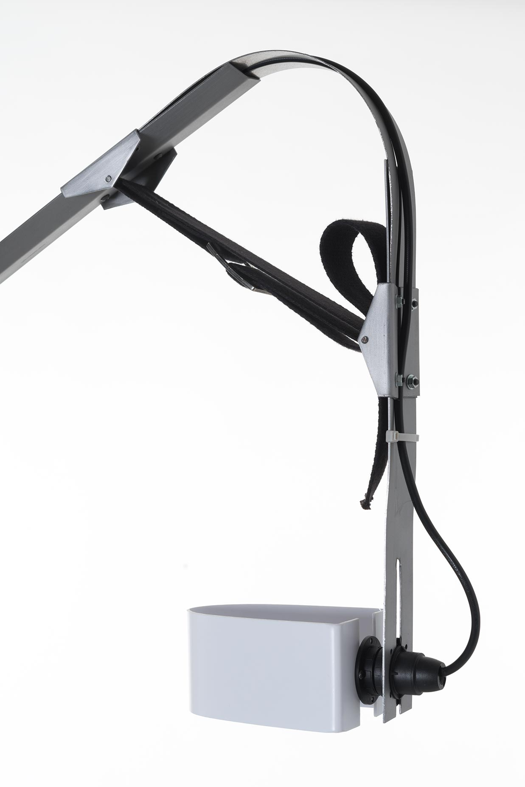
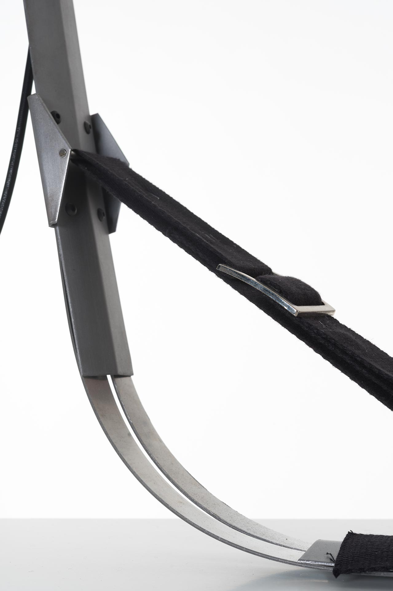
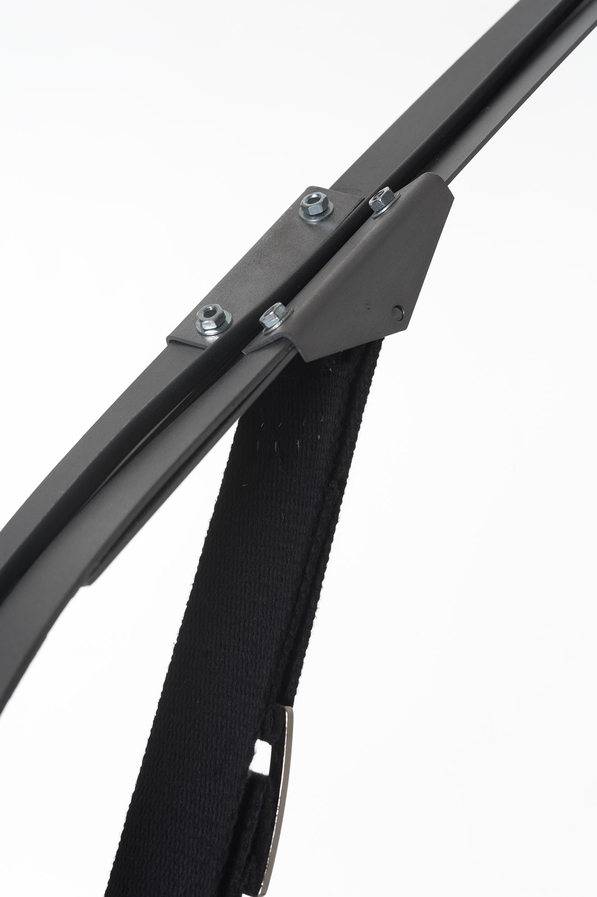

Lampe Ressort
2018
- Projet personnel
Comment rendre perceptible et lisible le fonctionnement global d’un objet ?
Pour ce projet personnel, j’ai conçu un objet manifeste, un prototype de lampe d’architecte dont les principes de fonctionnement sont mis en valeur. L’objectif est de rendre l’objet plus compréhensible et tangible pour l’utilisateur.
Le système de sangles ajustables permet de positionner l’éclairage de la lampe, selon que l’on veuille une lumière directe ou indirecte, proche ou éloignée. Il permet aussi de la ranger en position allongée.
L’abat-jour peut également être retourné.



@ All right reserved @